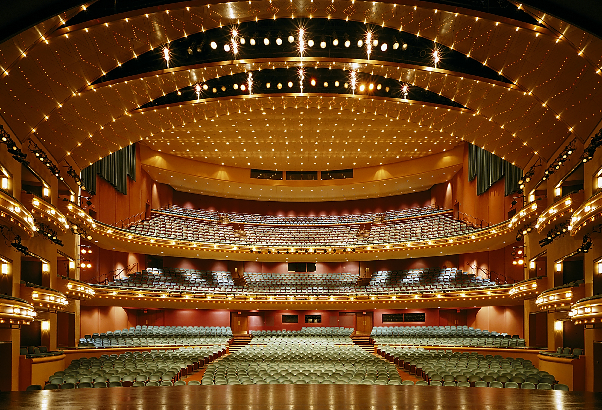
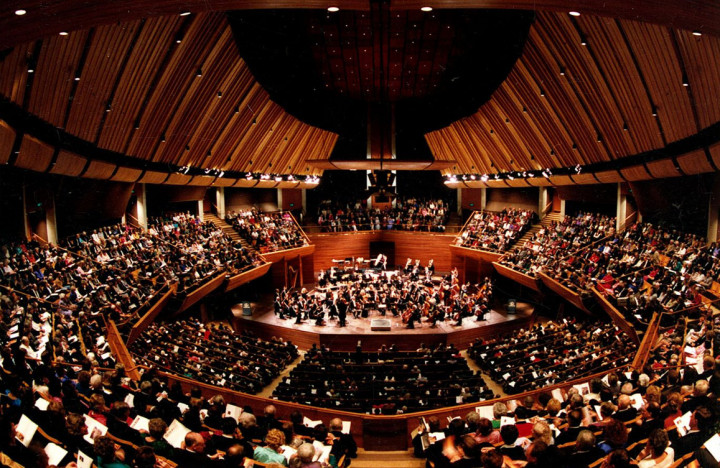
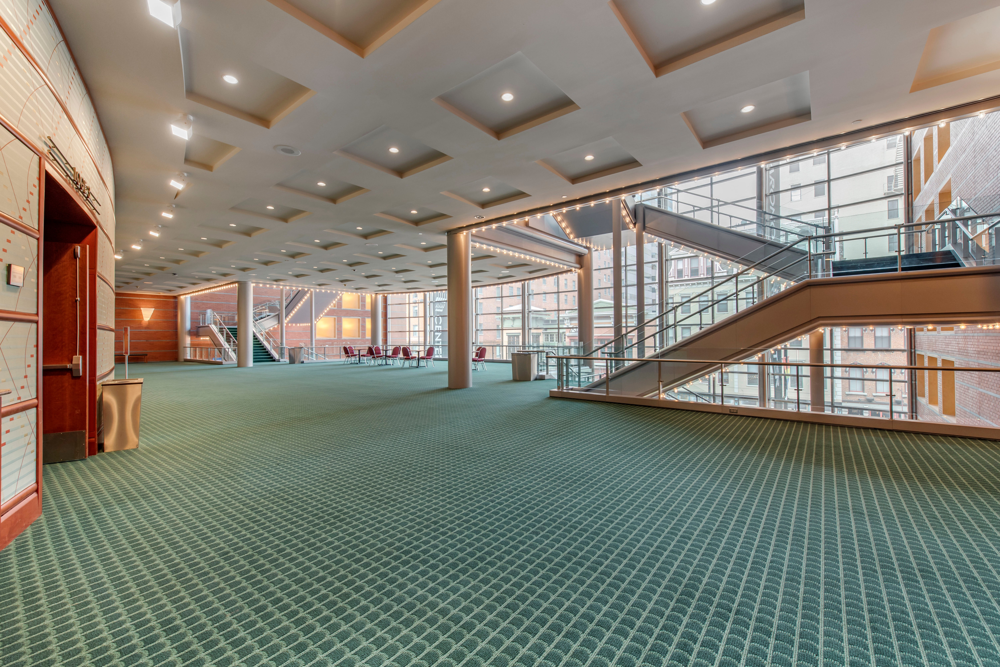

About the Venue
The Aronoff Center for the Arts is a perfect fit for the Omni conference. It is conveniently located in downtown Cincinnati and an easy walk from nearby hotels and restaurants. The center is handicap accessible.
A reception will also be held at the 21c in downtown Cincinnati. 21c is a multi-venue art museum and hotel and has been ranked #1 hotel in the midwest. Our reception will be in the stunning rooftop Cocktail Terrace overlooking spectacular views of the Queen City. Valet services available. The space is handicap accessible.
The Innovation Showcase will take place at the Hyatt Regency, in the heart of the Queen City. The Showcase will take place in the largest ballroom in the city where over 80 vendors will be promoting their services and answering questions.
  